Overview
Transforming pharmaceutical research through intelligent data discovery and governed access. A comprehensive design solution that unified fragmented data systems across pharma companies’ R&D organizations, enabling 5000+ researchers to discover, request, and analyze critical datasets with unprecedented speed and compliance.
Problem Statement
R&D teams struggled with fragmented data access across 200+ systems, creating bottlenecks that delayed critical research by weeks and limited cross-functional collaboration in drug discovery. Design an intuitive, self-service experience that would transform how companies researchers discover, access, and analyze R&D data while maintaining strict governance and compliance standards.
Our Process
As Senior Lead Product Designer, I drove the end-to-end design process from initial user research through to final implementation, ensuring the marketplace met both user needs and enterprise compliance requirements.
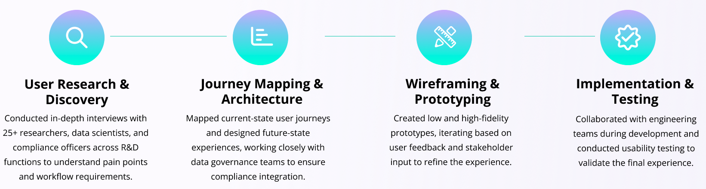Understanding the Problem


Research & Discovery
To design a solution that would truly transform data access , I conducted comprehensive research across multiple stakeholder groups, employing both qualitative and quantitative methods to understand the complete ecosystem.
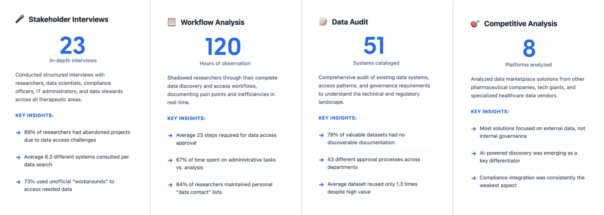Persona
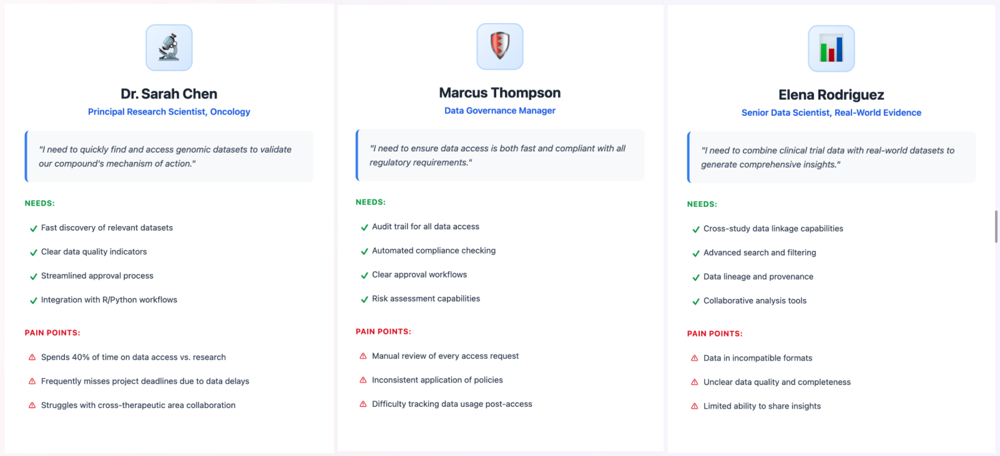Competitor Analysis
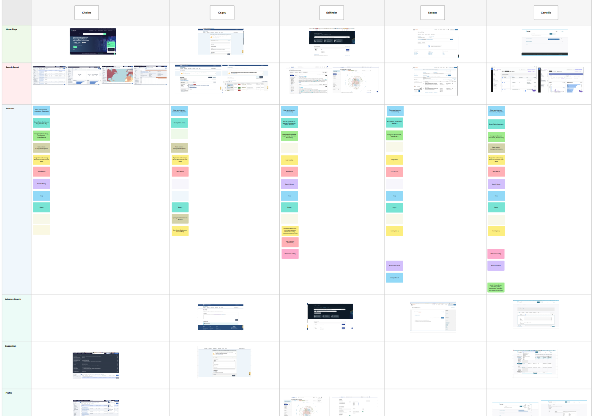Strategic Design Challenge
The design challenge extended far beyond creating a user interface. We needed to fundamentally reimagine how a global pharmaceutical organization could transform its relationship with data while navigating complex regulatory, cultural, and technical constraints.
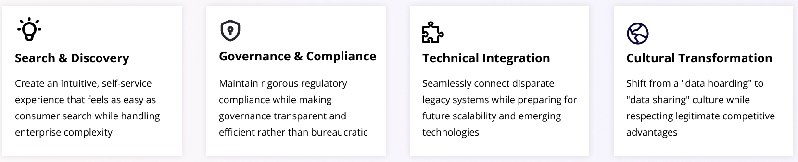Core Design Principles
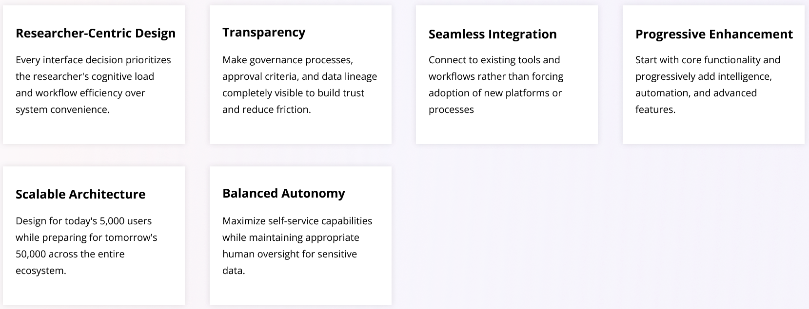Information Architecture

Customer Journey Mapping
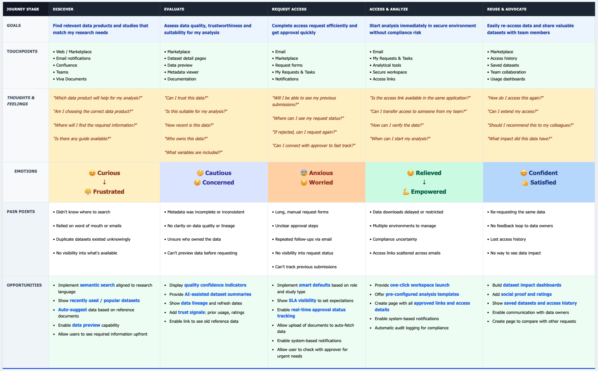User Journey
Search
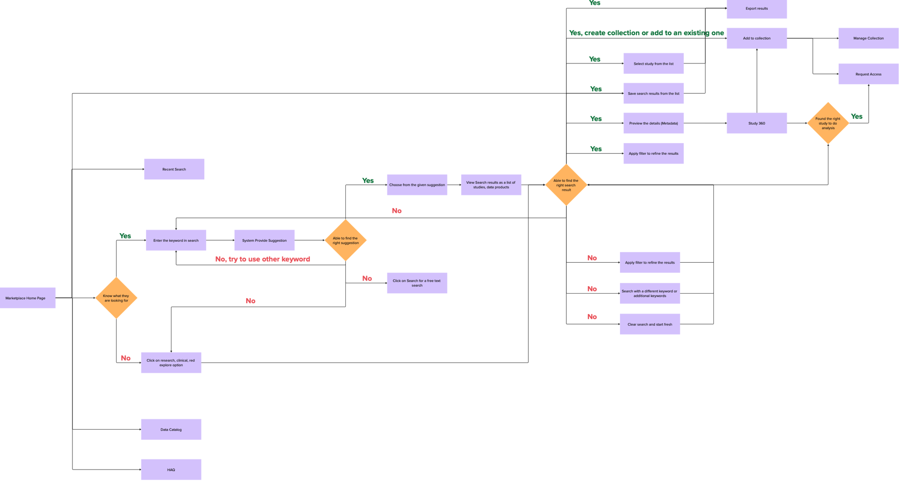Request Access
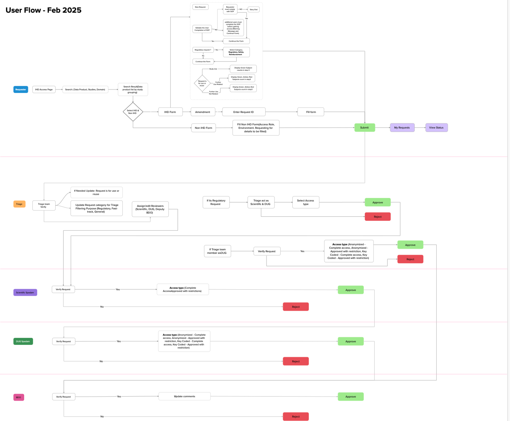Prototype & Design
Low Fidelity Prototype
High Fidelity Prototype

 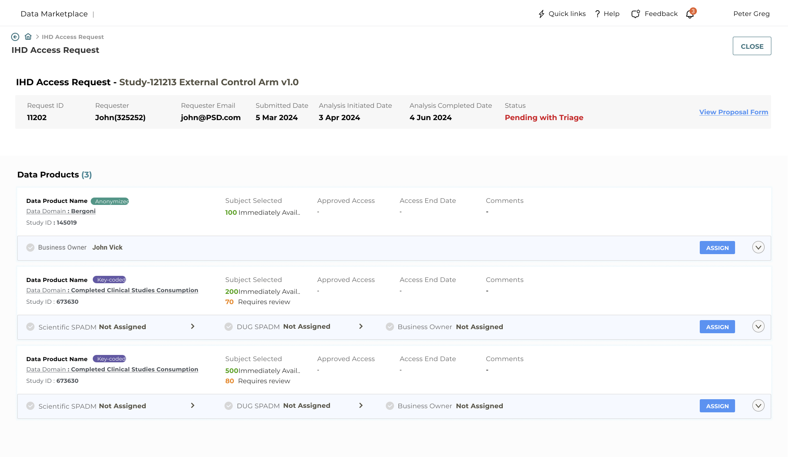
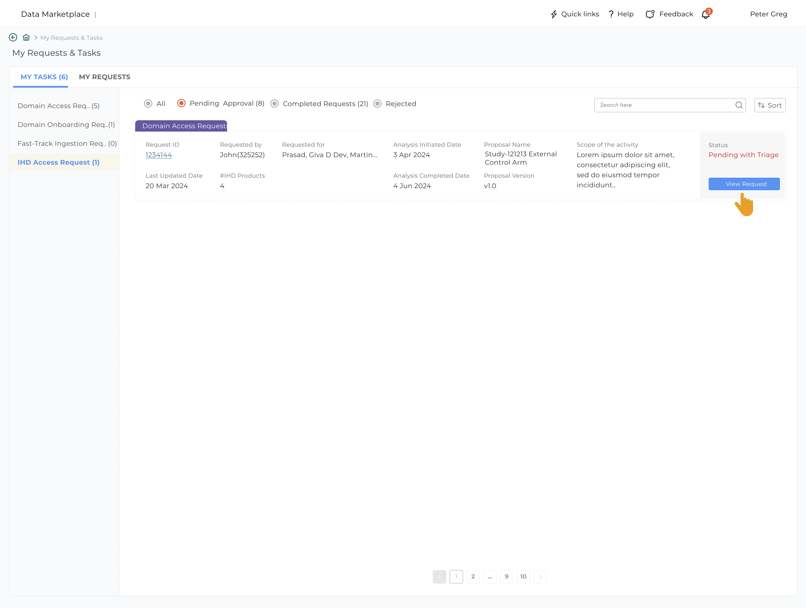
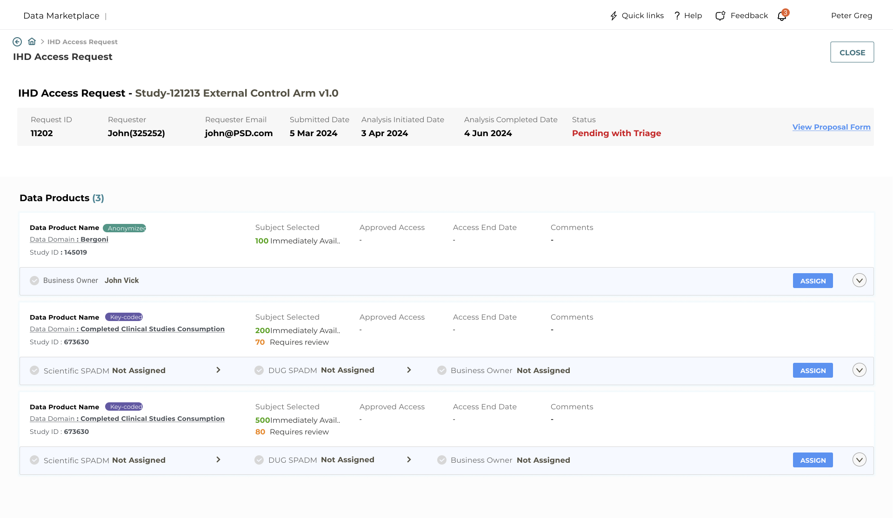
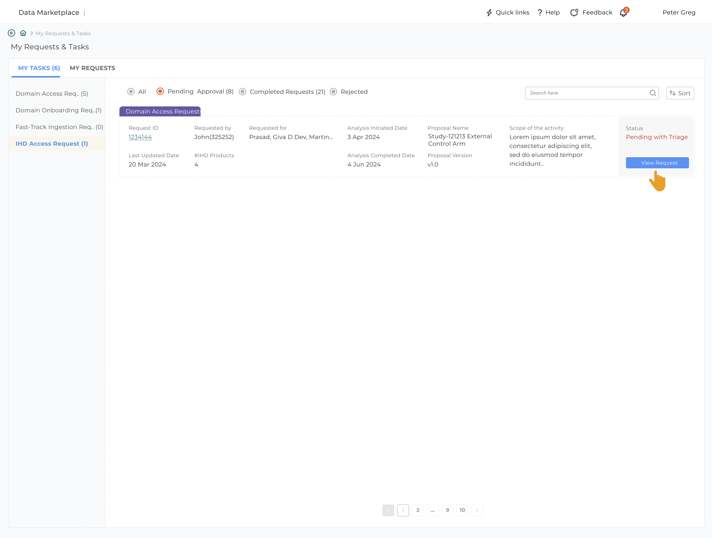
Key Learnings
Enterprise UX Requires Deep Domain Understanding
Success in enterprise healthcare required immersing myself in the complex world of R&D workflows, data governance, and compliance requirements. The most effective design decisions came from truly understanding the scientific research process.
Balancing Self-Service with Governance
The biggest design challenge was making data access feel effortless while maintaining strict compliance. This required careful information architecture and progressive disclosure of governance requirements.
Stakeholder Alignment is Critical
With multiple stakeholder groups (researchers, data stewards, compliance, IT), success required constant alignment and clear communication of design rationale and user impact.